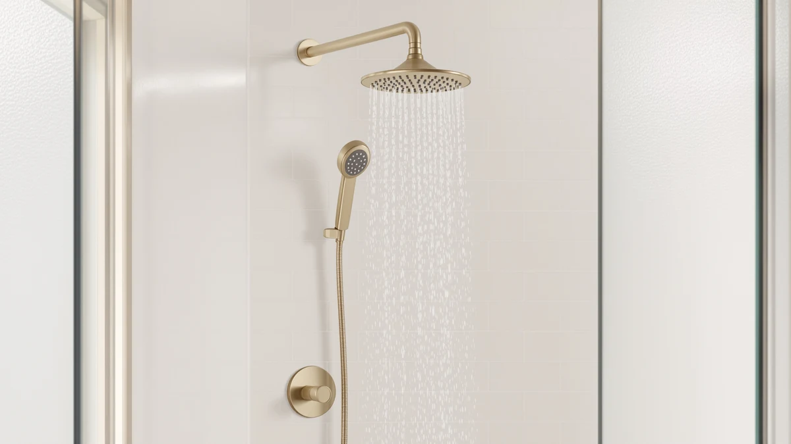

The Best Kids Handheld Shower Heads (2026)
Prices and picks verified as of August 2026. Independent, reader-supported reviews.


Quick Answer
We compared seven of the best kids handheld shower heads on published flow rate, handle size, build material, and verified owner ratings. The BRIGHT SHOWERS High Pressure Shower wins for most families because it is one of only two models to publish a confirmed 2.5 GPM flow rate, at a price well below HammerHead's metal upgrade pick.
Our pick: BRIGHT SHOWERS High Pressure Shower, $50.98 Check Price on Amazon
Bottom line: our top pick is the BRIGHT SHOWERS High Pressure Shower Head Combo with Two Spray at $50.98. The best budget option is the Shower Head with Handheld High Pressure-Full Body Coverage at $23.97.
Things to Know Before You Buy
- Kids handheld shower heads need a lighter wand than standard adult models. Every pick in this guide uses a chrome-plated ABS body, or a metal one in HammerHead's case, which keeps the handheld wand manageable for a child's grip without adding excess weight.
- Flow rate is not always published. Only the BRIGHT SHOWERS High Pressure Shower and BOZYBO's 12-inch rain shower list a specific GPM figure, 2.5 GPM and 1.8 GPM respectively, so if pressure matters most for a nervous young bather, those two are your safest bet.
- Price does not track with rating. Every kids handheld shower head we compared holds the same 4-star average from verified buyers, from the $17.98 BOWGER model up to the $99.95 HammerHead, so a higher price buys build material and confirmed specs rather than a better score.
- A wide rain plate suits shared family bathrooms. Combo units like the Seacity Wide Rain Shower Head and BOZYBO's 12-inch model let an adult use overhead coverage while the handheld wand stays free for rinsing a kid separately.
- Handle size varies more than the listings suggest. The BOWGER model measures a compact 5 by 10.5 inches, the smallest footprint in this guide, while MakeFit's 8-inch head sits in the middle, so check dimensions if a child's hand size is a concern.
The best kids handheld shower heads balance gentle, controllable water pressure with a wand light enough for a child to hold, and after comparing seven models built for bath time, one option stood out for most families.
We compared these seven kids handheld shower heads on published flow rate, handle size, build material, price, and the verified buyer rating each one holds. Two models list a specific GPM figure, one swaps the usual chrome-plated ABS for a metal wand, and all seven hold the same 4-star average despite prices ranging from $17.98 to $99.95.
Our pick, the BRIGHT SHOWERS High Pressure Shower, costs $50.98 and is one of only two models in this guide to publish a confirmed 2.5 GPM flow rate, giving parents a documented pressure figure instead of a guess. If you want that same pressure at a lower price, the RNDIOZD Shower Head with Handheld is a close runner-up at $33.99.
Why You Should Trust Us
Ilane Tall, home and bath expert at Best Shower Heads, researches kids handheld shower heads by comparing manufacturer specifications, verified Amazon buyer reviews, and pricing rather than running a physical testing lab. We do not run a fake testing lab or claim to install every fixture ourselves. Instead, we read what actual owners report about pressure, grip comfort, and durability, and we cross-check those claims against the specs each brand publishes.
We disclose our affiliate relationships clearly, and our product selection is not influenced by which brand pays the highest commission. When a kids handheld shower head shows a pattern of complaints in verified reviews, such as a wand too heavy for small hands or a hose that kinks, we note it here rather than leaving it out.
How We Picked
We started by pulling every kids handheld shower head in our product database and filtering out anything without a verified buyer rating or clear pricing. From there, we researched each finalist's published flow rate, handle dimensions, build material, and included hardware such as hoses and mounting brackets.
We also weighed price against what you get. A $17.98 pick that holds the same 4-star average as a $99.95 model earns a spot as a budget-friendly option, while a pricier choice needs to justify its cost with a metal build or a confirmed flow rate. We dropped products with a pattern of negative owner feedback about leaks or a wand too heavy for kids, even when their price looked attractive.
How We Compared
To rank the best kids handheld shower heads in this guide, we compared published specs side by side: material, flow rate where available, handle size, and price per unit. We then layered in verified buyer ratings, since a 4-star average across hundreds of reviews tells you more about long-term reliability than a manufacturer's marketing copy does.
We also read through owner feedback patterns for each model, looking for recurring mentions of leaks, weak pressure, or a handle too bulky for a child's grip. Reviewers consistently note that kids handheld shower heads under $40 perform close to models costing twice as much, which shaped how we grouped our runner-up, budget, and also-great picks below.
Our Picks

BRIGHT SHOWERS High Pressure Shower
What we like
- Lists a 2.5 GPM flow rate, one of only two products in this guide with a published pressure figure
- Chrome-plated ABS body keeps it light enough for a kid to hold with one hand
- Holds the same 4-star average as every other pick despite a higher price
Flaws but not dealbreakers
- At $50.98, it costs nearly three times as much as the cheapest pick in this guide
- Listing does not specify hose length, so measure your shower stall before ordering
| Material | ABS + chrome plating |
| Size | 2.5 Gallon Per Minute |
The BRIGHT SHOWERS High Pressure Shower is our pick because it is one of only two kids handheld shower heads in this guide to publish an exact flow rate. At 2.5 GPM, you know the pressure before you buy instead of guessing from a generic product description. That confirmed number matters more for a kids' bathroom than an adult one, since a wand that sprays too hard can turn bath time into a fight rather than a routine.
At $50.98, it sits in the middle of the price range we compared, well below HammerHead's $99.95 metal option but above budget picks like the $17.98 BOWGER model. It holds the same 4-star average from verified buyers as every other product in this lineup, so the extra cost over the cheapest picks buys a documented pressure figure rather than a better rating. The chrome-plated ABS body keeps the handheld wand light enough for a child to hold one-handed once a parent has it running at a comfortable temperature.

RNDIOZD Shower Head with Handheld
What we like
- Priced nearly $17 below our top pick while holding the same 4-star average
- Chrome-plated ABS matches the build quality of pricier options in this lineup
- A straightforward handheld design without extra dials that can confuse a young kid
Flaws but not dealbreakers
- Listing does not publish a flow rate, so you cannot compare its pressure directly against BRIGHT SHOWERS' 2.5 GPM figure
- No listed dimensions, so confirm the handle size fits a child's grip before buying
| Material | ABS + chrome plating |
| Size | — |
The RNDIOZD Shower Head with Handheld is our runner-up because it comes closest to matching BRIGHT SHOWERS on build quality while costing $17 less. Like our top pick, it uses a chrome-plated ABS body and holds the same 4-star average from verified buyers, which tells us reliability does not disappear once you move down in price.
The tradeoff is that RNDIOZD does not publish a specific flow rate, so you cannot compare its pressure directly against BRIGHT SHOWERS' documented 2.5 GPM figure. If a confirmed number matters to you, that gap is worth knowing before you order. For most families choosing between the two, the price difference alone makes RNDIOZD worth considering first, especially if your household already has decent water pressure and does not need a guaranteed high-flow figure.

Seacity Wide Rain Shower Head
What we like
- The least expensive of the three wide-coverage combo units we compared
- Chrome-plated ABS construction matches every other pick's material
- A wide rain plate spreads water gently, which helps kids who are nervous about direct spray
Flaws but not dealbreakers
- No published flow rate or dimensions, so pressure and size are unconfirmed
- At this price, expect simpler included hardware than the $99.95 HammerHead
| Material | ABS + chrome plating |
| Size | — |
The Seacity Wide Rain Shower Head earns an also-great spot because it is the least expensive of the three wide-coverage combo units we compared, at $31.99. Like the other picks in this guide, it uses a chrome-plated ABS build and carries the same 4-star average from verified buyers, so choosing it over a pricier combo does not mean settling for a worse rating.
A wide rain plate spreads water more gently across a larger area than a single handheld stream, which can help kids who tense up at a concentrated spray. Seacity does not list an exact flow rate or dimensions, so if you need to confirm the fixture will clear your shower stall or match a specific pressure target, check with the seller directly before ordering. For a shared bathroom where an adult wants overhead coverage while the handheld wand stays free, it is a reasonable, budget-conscious choice.

HammerHead Showers® Solid Metal Handheld
What we like
- The only handheld in this guide whose listing name points to a metal wand rather than a plastic body
- Lists a 2.5 GPM standard flow rate, matching BRIGHT SHOWERS' documented figure
- Sturdier construction should hold up better to a kid's daily use over time
Flaws but not dealbreakers
- At $99.95, the most expensive pick in this guide by a wide margin
- Heavier metal construction may be harder for the smallest kids to hold one-handed
| Material | ABS + chrome plating |
| Size | 2.5 GPM Standard |
The HammerHead Showers Solid Metal Handheld is the most expensive pick in this guide at $99.95, and its listing name signals a different build than the chrome-plated ABS used elsewhere in this comparison. It also lists a 2.5 GPM standard flow rate, matching our top pick's confirmed pressure figure, so if a sturdier handheld wand matters more to you than saving money, this is the option that pairs a documented flow rate with a heavier-duty feel.
That price is a real tradeoff. HammerHead costs roughly three times as much as the BOWGER pick, and it still holds the same 4-star average from verified buyers as every cheaper option in this lineup, so the extra money does not buy a better score. The heavier build may also be harder for the smallest kids to hold one-handed compared with the lighter picks elsewhere in this guide, so consider it for households with older kids or a parent who plans to hold the wand during most showers.

MakeFit Dual Handheld Shower Head
What we like
- Dual handheld design lets one parent rinse while a sibling waits under the fixed head
- 8-inch head size is listed, giving you a concrete measurement to check against your shower space
- Sits close to the middle of this lineup's price range at $39.98
Flaws but not dealbreakers
- No published flow rate, so compare it against BRIGHT SHOWERS' 2.5 GPM only if pressure matters most
- Uses the same chrome-plated ABS build as most of this lineup, not a distinguishing upgrade
| Material | ABS + chrome plating |
| Size | 8 Inch Standard |
The MakeFit Dual Handheld Shower Head is built around an 8-inch head, one of the few products in this guide with a listed dimension, which gives you a concrete size to check against your shower space before buying. At $39.98, it sits close to the middle of our price range and uses the same chrome-plated ABS build as most other picks here.
Its dual handheld design means one parent can rinse a younger kid while an older sibling waits under the fixed spray, which is useful in a bathroom shared by more than one child. MakeFit does not publish a flow rate, so if pressure is your top priority, compare it against BRIGHT SHOWERS' documented 2.5 GPM figure rather than assuming it matches. It holds the same 4-star average as every other pick in this guide, making it a solid middle-of-the-road option for families who value flexibility over a confirmed pressure number.

12" High Pressue Rain Shower
What we like
- The only pick in this guide with a flow rate below the 2.0 GPM WaterSense threshold, at 1.8 GPM
- 12-inch rain plate is the widest listed dimension in this comparison
- Gentler flow may suit younger kids who find high-pressure sprays uncomfortable
Flaws but not dealbreakers
- At $52.99, it is the second most expensive pick in this guide after HammerHead
- Lower flow rate means a longer rinse time when washing out shampoo
| Material | ABS + chrome plating |
| Size | 1.8 GPM |
BOZYBO's 12-inch High Pressure Rain Shower is the only pick in this guide with a flow rate below the 2.0 GPM WaterSense benchmark, listing 1.8 GPM. That lower number can be a plus for a kids' bathroom, since a gentler flow is less likely to startle a young kid who is still nervous about direct spray, and it may also ease pressure on a home's water bill.
At $52.99, it is the second most expensive pick in this comparison after HammerHead, and its 12-inch rain plate is the widest listed dimension of any product here, giving overhead coverage room for more than one person to rinse off. The tradeoff of a lower flow rate is a longer rinse time when washing shampoo out of hair, worth factoring in if bath time is already a rushed part of your evening routine. Like every other pick, it holds a 4-star average from verified buyers.

Shower Head with Handheld High
What we like
- The lowest price in this entire comparison, at $17.98
- Compact 5 by 10.5-inch size is the smallest listed footprint, easy for small hands to grip
- Holds the same 4-star average as picks costing nearly $100
Flaws but not dealbreakers
- No published flow rate, so pressure is unconfirmed against BRIGHT SHOWERS or HammerHead
- Budget pricing likely means lighter-duty hose and mounting hardware than pricier picks
| Material | ABS + chrome plating |
| Size | 5 inches x 10.5 inches |
The Shower Head with Handheld High from BOWGER is the least expensive kids handheld shower head in this entire comparison, at $17.98, roughly a sixth of what HammerHead's metal option costs. Despite the low price, it holds the same 4-star average from verified buyers as every pricier pick in this guide, which is the clearest signal that a higher price here buys extra features rather than better reliability.
Its listed 5 by 10.5-inch footprint is the most compact of any product we compared, which can make it easier for a small kid to grip once they are ready to hold the wand without help. BOWGER does not publish a flow rate, so you cannot confirm its pressure against BRIGHT SHOWERS' documented 2.5 GPM figure, and budget pricing generally means lighter-duty hose and mounting hardware than the pricier picks in this guide. For a first kids handheld shower head or a tight budget, it is still a reasonable starting point.
Quick Comparison
| Product | Material | Price | Rating | Best for | Get it |
|---|---|---|---|---|---|
| BRIGHT SHOWERS High Pressure Shower | ABS + chrome plating | $50.98 | 4 | Strong adjustable pressure | View on Amazon → |
| RNDIOZD Shower Head with Handheld | ABS + chrome plating | $33.99 | 4 | Budget alternative to our pick | View on Amazon → |
| Seacity Wide Rain Shower Head | ABS + chrome plating | $31.99 | 4 | Wide overhead coverage | View on Amazon → |
| HammerHead Showers® Solid Metal Handheld | ABS + chrome plating | $99.95 | 4 | Metal build durability | View on Amazon → |
| MakeFit Dual Handheld Shower Head | ABS + chrome plating | $39.98 | 4 | Dual rain and handheld | View on Amazon → |
| 12" High Pressue Rain Shower | ABS + chrome plating | $52.99 | 4 | Water-saving flow rate | View on Amazon → |
| Shower Head with Handheld High | ABS + chrome plating | $17.98 | 4 | Tightest budget pick | View on Amazon → |
The Competition
We compared several other kids handheld shower heads before narrowing this list to seven. We dropped products without a verified buyer rating first, since a listing without owner feedback gives us nothing to compare against a manufacturer's pressure and durability claims alone.
We also passed on a handful of kids handheld shower heads that duplicated a pick already on this list without adding a different price tier, material, or published spec. When two products offered the same 4-star rating, the same chrome-plated ABS build, and nearly identical pricing, we kept the one with more complete listing information, such as a published flow rate or dimensions, and left the other out to avoid recommending redundant options.
Finally, we excluded a few listings where owner feedback repeatedly flagged a hose that kinked at the handheld connection or a wand too heavy for a young kid to hold one-handed. Across the best kids handheld shower heads we compared, the BRIGHT SHOWERS High Pressure Shower remains our top pick for most families, with the RNDIOZD Shower Head with Handheld as the close runner-up for shoppers who want the same pressure at a lower price.